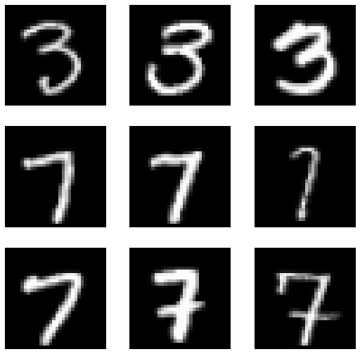
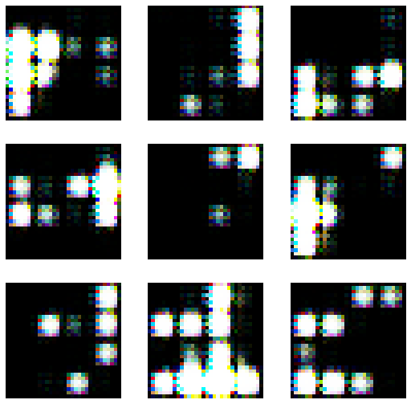
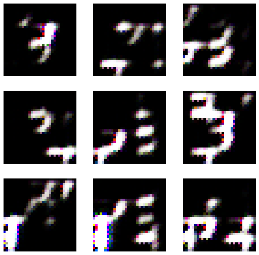
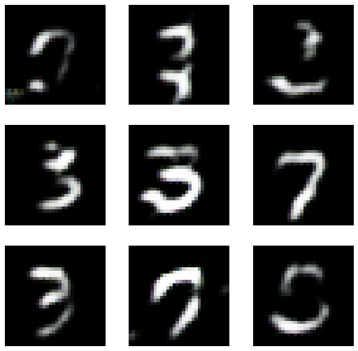

from fastai.vision.all import *
from fastai.vision.gan import * 09/15: [Overview] 이미지분석 추천시스템 텍스트분석의 비교정리, GAN
강의영상
youtube: https://youtube.com/playlist?list=PLQqh36zP38-wLTADeftdizvmko4y_ATAW
imports
fastai를 이용한 분석 steps
- 비교
| 이미지분석(CNN) | 추천시스템 | 텍스트분석 | GAN | |
|---|---|---|---|---|
| 1단계 | ImageDataLoaders | CollabDataLoaders | TextDataLoaders | DataBlock -> dls |
| 2단계 | cnn_learner() | collab_learner() | language_model_learner() | GANLearner.wgan() |
| 3단계 | lrnr.fine_tune(1) | lrnr.fit() | lrnr.fit() | lrnr.fit() |
| 4단계 | lrnr.predict(), lrnr.model(X) | lrnr.model(X) | lrnr.predict() |
이미지분석, 추천시스템, 텍스트분석의 정리
- 데이터는 모두 아래와 같은 느낌이다.
데이터는 \((X,y)\)의 형태로 정리되어 있다.
\(y\)는 우리가 관심이 있는 변수이다. 즉 우리는 \(y\)를 적절하게 추정하는 것에 관심이 있다.
\(X\)는 \(y\)를 추정하기 위해 필요한 정보이다.
| \(X\) = 설명변수 = 독립변수 | \(y\) = 반응변수 = 종속변수 | 비고 | 순서 | 예시 |
|---|---|---|---|---|
| 이미지 | 카테고리 | 합성곱신경망 | 상관없음 | 개/고양이 이미지 구분 |
| 유저,아이템 | 평점 | 추천시스템 | 상관없음 | 넷플릭스 영화추천 |
| 과거~오늘까지의주가 | 내일주가 | 순환신경망 | 순서상관있음 | 주가예측 |
| 처음 \(m\)개의 단어(혹은 문장) | 이후 1개의 단어(혹은 문장) | 순환신경망 | 순서상관있음 | 챗봇, 텍스트생성 |
| 처음 \(m\)개의 단어(혹은 문장) | 카테고리 | 순환신경망 | 순서상관있음 | 영화리뷰 텍스트 감정분류 |
- 학습이란 주어진 자료 \((X,y)\)를 잘 분석하여 \(X\)에서 \(y\)로 가는 어떠한 “규칙” 혹은 “원리”를 찾는 것이다. - 학습이란 주어진 자료 \((X,y)\)를 잘 분석하여 \(X\)에서 \(y\)로 가는 어떠한 “맵핑”을 찾는 것이다. - 학습이란 주어진 자료 \((X,y)\)를 잘 분석하여 \(X\)에서 \(y\)로 가는 어떠한 “힘수”을 찾는 것이다. 즉 \(y\approx f(X)\)가 되도록 만드는 \(f\)를 잘 찾는 것이다. (이 경우 함수를 추정한다라고 표현) - 학습이란 주어진 자료 \((X,y)\)를 잘 분석하여 \(X\)에서 \(y\)로 가는 어떠한 “모델”을 찾는 것이다. 즉 \(y\approx model(X)\)가 되도록 만드는 \(model\)을 잘 찾는 것이다. (이 경우 모형을 학습시킨다라고 표현) - 학습이란 주어진 자료 \((X,y)\)를 잘 분석하여 \(X\)에서 \(y\)로 가는 어떠한 “네트워크”을 찾는 것이다. 즉 \(y\approx net(X)\)가 되도록 만드는 \(net\)을 잘 찾는 것이다. (이 경우 모형을 네트워크를 학습시킨다라고 표현)
- prediction이란 학습과정에서 찾은 “규착” 혹은 “원리”를 \(X\)에 적용하여 \(\hat{y}\)을 구하는 과정이다. 학습과정에서 찾은 규칙 혹은 원리는 \(f\),\(model\),\(net\) 으로 생각가능한데 이에 따르면 아래가 성립한다. - \(\hat{y} = f(X)\) - \(\hat{y} = model(X)\) - \(\hat{y} = net(X)\)
자잘한개념
- \(\hat{y}\)는 \(X\)가 주어진 자료에 있는 값인지 아니면 새로운 값 인지에 따라 지칭하는 이름이 미묘하게 다르다.
(경우1) \(X \in data\): \(\hat{y}=net(X)\) 는 predicted value, fitted value 라고 부른다.
(경우2) \(X \notin data\): \(\hat{y}=net(X)\) 는 predicted value, predicted value with new data 라고 부른다.
- 경우1은 “\(loss\) = \(y\) 와 \(\hat{y}\) 의 차이” 를 정의할 수 있으나 경우2는 그렇지 않다.
GAN intro
- 저자: 이안굿펠로우 - 천재임 - 지도교수가 요수아 벤지오
- 논문 NIPS, 저는 이 논문 읽고 소름돋았어요.. - https://arxiv.org/abs/1406.2661 (현재시점, 38751회 인용되었음 \(\to\) 48978회 인용..)
- 최근 10년간 머신러닝 분야에서 가장 혁신적인 아이디어이다. (얀르쿤, 2014년 시점..)
- 무슨내용? 생성모형
생성모형이란? (쉬운 설명)
만들수 없다면 이해하지 못한 것이다, 리처드 파인만 (천재 물리학자)
- 사진속에 들어있는 동물이 개인지 고양이인지 맞출수 있는 기계와 개와 고양이를 그릴수 있는 기계중 어떤것이 더 시각적보에 대한 이해가 깊다고 볼수 있는가?
- 진정으로 인공지능이 이미지를 이해했다면, 이미지를 만들수도 있어야 한다. \(\to\) 이미지를 생성하는 모형을 만들어보자 \(\to\) 성공

GAN의 응용분야
- 내가 찍은 사진이 피카소의 화풍으로 표현된다면?
- 퀸의 라이브에이드가 4k로 나온다면?
- 1920년대 서울의 모습이 칼라로 복원된다면?
- 딥페이크: 유명인의 가짜 포르노, 가짜뉴스, 협박(거짓기소)
- 게임영상 (파이널판타지)
- 거북이의 커버..
- 너무 많아요…..
생성모형이란? 통계학과 버전의 설명
제한된 정보만으로 어떤 문제를 풀 때, 그 과정에서 원래의 문제보다 일반적인 문제를 풀지 말고, 가능한 원래의 문제를 직접 풀어야한다. 배프닉 (SVM 창시자)
- 이미지 \(\boldsymbol{x}\)가 주어졌을 경우 라벨을 \(y\)라고 하자.
- 이미지를 생성하는 일은 \(p(\boldsymbol{x},y)\)에 관심이 있는것이다. 여기에서 \(p(\boldsymbol{x},y)\)는 \({\boldsymbol x},y\)의 결합확률밀도함수.
- 이미지를 보고 라벨을 맞추는 일은 \(p(y| \boldsymbol{x})\)에 관심이 있다. 여기에서 \(p(y|\boldsymbol{x})\)는 조건부 확률밀도 함수
- 데이터의 생성확률 \(p(\boldsymbol{x},y)\)을 알면 클래스의 사후확률 \(p(y|\boldsymbol{x})\)를 알 수 있음. (아래의 수식 참고) 하지만 역은 불가능
\[p(y|{\boldsymbol x}) = \frac{p({\boldsymbol x},y)}{p({\boldsymbol x})} = \frac{p({\boldsymbol x},y)}{\sum_{y}p({\boldsymbol x},y)} \]
- 즉 이미지를 생성하는일은 분류문제보다 더 어려운 일이라 해석가능
- 따라서 배프닉의 원리에 의하면 식별적 분류가 생성적 분류보다 바람직한 접근법이라 할 수 있음.
- 하지만 다양한 현실문제에서 생성모형이 유용할때가 많다.
GAN의 원리
- GAN은 생성모형중 하나임
- GAN의 원리는 경찰과 위조지폐범이 서로 선의의(?) 경쟁을 통하여 서로 발전하는 모형으로 설명할 수 있다.
The generative model can be thought of as analogous to a team of counterfeiters, trying to produce fake currency and use it without detection, while the discriminative model is analogous to the police, trying to detect the counterfeit currency. Competition in this game drives both teams to improve their methods until the counterfeits are indistiguishable from the genuine articles.
- 서로 적대적인(adversarial) 네트워크(network)를 동시에 학습시켜 가짜이미지를 만든다(generate)
- 무식한 상황극..
- 위조범: 가짜돈을 만들어서 부자가 되어야지! (가짜돈을 그림)
- 경찰: (위조범이 만든 돈을 보고) 이건 가짜다!
- 위조범: 걸렸군.. 더 정교하게 만들어야지..
- 경찰: 이건 진짠가?… –> 상사에게 혼남. 그것도 구분못하냐고
- 위조범: 더 정교하게 만들자..
- 경찰: 더 판별능력을 업그레이드 하자!
- 반복..
- 굉장히 우수한 경찰조차도 진짜와 가짜를 구분하지 못할때(=진짜 이미지를 0.5의 확률로만 진짜라고 말할때 = 가짜 이미지를 0.5의 확률로만 가짜라고 말할때) 학습을 멈춘다.
아키텍처
- 아래와 같은 두 모델(네트워크)를 생각하자. - 위조범네트워크: X=노이즈(=아무숫자) \(\to\) y=지폐이미지(=가짜지폐) - 경찰네트워크: X={가짜지폐,진짜지폐} \(\to\) y={진짜,가짜}
- 전체 알고리즘은 아래와 같은 순서로 돌아간다. (전체 이미지 자료는 \(n\)개라고 하자)
적당한 크기의 \(n\)개의 노이즈가 위조범네트워크에 입력으로 들어감
위조범네트워크는 적당한 크기의 \(n\)개의 노이즈를 입력으로 받고 출력으로 \(n\)개의 이미지를 뱉어냄.
위조범이 뱉어낸 이미지와 진짜이미지를 합쳐 \(2n\)개의 자료를 만들고 이를 경창네트워크의 입력으로 넣음.
경찰네트워크는 \(2n\)개의 자료를 입력으로 받아서 \(2n\)개의 예측결과를 제공.
GAN 실습
1단계
path = untar_data(URLs.MNIST_SAMPLE)dblock = DataBlock(blocks=(TransformBlock,ImageBlock),
get_x = generate_noise,
get_items=get_image_files,
item_tfms=Resize(32))
dls = dblock.dataloaders(path) dls.show_batch()
2단계
counterfeiter = basic_generator(32,n_channels=3,n_extra_layers=1) # 32*32의 이미지가 칼라이미지로 출력.
police = basic_critic(32,n_channels=3,n_extra_layers=1) # 32*32의 칼라이미지가 입력으로 들어옴. lrnr = GANLearner.wgan(dls,counterfeiter,police) 3단계
- lrnr.fit(10) 진행
lrnr.fit(10)| epoch | train_loss | valid_loss | gen_loss | crit_loss | time |
|---|---|---|---|---|---|
| 0 | -0.546135 | 0.362349 | 0.362349 | -0.757082 | 00:02 |
| 1 | -0.582954 | 0.300018 | 0.300018 | -0.770161 | 00:02 |
| 2 | -0.585224 | 0.277624 | 0.277624 | -0.769241 | 00:02 |
| 3 | -0.582842 | 0.385249 | 0.385249 | -0.764790 | 00:02 |
| 4 | -0.584591 | 0.333895 | 0.333895 | -0.768902 | 00:02 |
| 5 | -0.587377 | 0.304535 | 0.304535 | -0.773640 | 00:02 |
| 6 | -0.580959 | 0.274871 | 0.274871 | -0.765747 | 00:02 |
| 7 | -0.559458 | 0.348925 | 0.348925 | -0.734318 | 00:02 |
| 8 | -0.486598 | 0.074547 | 0.074547 | -0.545082 | 00:03 |
| 9 | -0.550950 | 0.278006 | 0.278006 | -0.724520 | 00:03 |
lrnr.show_results()
- lrnr.fit(10) 추가로 진행 // 총20회
lrnr.fit(10)| epoch | train_loss | valid_loss | gen_loss | crit_loss | time |
|---|---|---|---|---|---|
| 0 | -0.534234 | 0.261044 | 0.261044 | -0.737007 | 00:02 |
| 1 | -0.515386 | 0.241006 | 0.241006 | -0.720394 | 00:02 |
| 2 | -0.561530 | 0.249572 | 0.249572 | -0.742900 | 00:02 |
| 3 | -0.544423 | 0.315043 | 0.315043 | -0.739004 | 00:02 |
| 4 | -0.534188 | 0.235120 | 0.235120 | -0.686251 | 00:02 |
| 5 | -0.494047 | 0.284046 | 0.284046 | -0.633201 | 00:02 |
| 6 | -0.506470 | 0.214011 | 0.214011 | -0.687545 | 00:02 |
| 7 | -0.527870 | 0.262492 | 0.262492 | -0.731213 | 00:02 |
| 8 | -0.504433 | 0.192755 | 0.192755 | -0.674976 | 00:02 |
| 9 | -0.538148 | 0.204089 | 0.204089 | -0.728712 | 00:02 |
lrnr.show_results()
- lrnr.fit(30) 추가로 진행 // 총50회
lrnr.fit(30)| epoch | train_loss | valid_loss | gen_loss | crit_loss | time |
|---|---|---|---|---|---|
| 0 | -0.509745 | 0.286478 | 0.286478 | -0.691290 | 00:02 |
| 1 | -0.502572 | 0.285199 | 0.285199 | -0.675554 | 00:02 |
| 2 | -0.473333 | 0.219742 | 0.219742 | -0.650543 | 00:02 |
| 3 | -0.419040 | 0.287789 | 0.287789 | -0.543150 | 00:02 |
| 4 | -0.275088 | 0.264852 | 0.264852 | -0.105730 | 00:02 |
| 5 | -0.350050 | 0.330111 | 0.330111 | -0.529484 | 00:02 |
| 6 | -0.394095 | 0.228335 | 0.228335 | -0.616371 | 00:02 |
| 7 | -0.247936 | 0.177943 | 0.177943 | -0.286712 | 00:02 |
| 8 | -0.333396 | 0.207328 | 0.207328 | -0.585255 | 00:02 |
| 9 | -0.370004 | 0.356040 | 0.356040 | -0.641916 | 00:02 |
| 10 | -0.463898 | 0.195165 | 0.195165 | -0.215188 | 00:02 |
| 11 | -0.241843 | 0.110512 | 0.110512 | -0.411598 | 00:02 |
| 12 | -0.227809 | -0.094414 | -0.094414 | -0.306309 | 00:02 |
| 13 | -0.185607 | -0.063660 | -0.063660 | -0.261691 | 00:02 |
| 14 | -0.219289 | -0.041734 | -0.041734 | -0.424938 | 00:02 |
| 15 | -0.048843 | 0.063750 | 0.063750 | -0.088812 | 00:02 |
| 16 | -0.092374 | -0.218327 | -0.218327 | -0.001817 | 00:02 |
| 17 | -0.081938 | -0.068263 | -0.068263 | -0.052643 | 00:02 |
| 18 | -0.031063 | -0.183604 | -0.183604 | -0.013827 | 00:02 |
| 19 | -0.025211 | 0.041027 | 0.041027 | -0.061204 | 00:02 |
| 20 | -0.023948 | 0.244387 | 0.244387 | -0.001813 | 00:02 |
| 21 | -0.073112 | 0.275998 | 0.275998 | -0.150063 | 00:02 |
| 22 | -0.064780 | 0.112151 | 0.112151 | -0.123186 | 00:02 |
| 23 | -0.030959 | 0.002616 | 0.002616 | -0.134843 | 00:02 |
| 24 | -0.066342 | 0.604107 | 0.604107 | -0.118417 | 00:02 |
| 25 | -0.025819 | 0.066880 | 0.066880 | -0.087840 | 00:02 |
| 26 | -0.061908 | -0.129382 | -0.129382 | -0.101803 | 00:02 |
| 27 | -0.096987 | -0.213048 | -0.213048 | -0.081656 | 00:02 |
| 28 | -0.114984 | 0.287159 | 0.287159 | -0.152345 | 00:02 |
| 29 | -0.062543 | -0.076906 | -0.076906 | -0.078245 | 00:02 |
lrnr.show_results()
- 그럴싸한 글씨가 몇개 보이긴 함